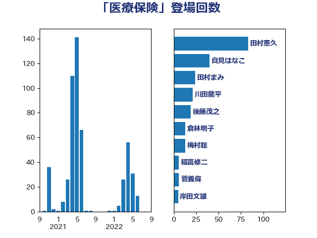

単語「医療保険」

| 田村憲久 | 自由民主党 | 83 回 |
| 自見はなこ | 自由民主党 | 40 回 |
| 田村まみ | 国民民主党 | 24 回 |
| 川田龍平 | 立憲民主党 | 21 回 |
| 後藤茂之 | 自由民主党 | 19 回 |
| 倉林明子 | 日本共産党 | 13 回 |
| 梅村聡 | 日本維新の会 | 13 回 |
| 稲富修二 | 立憲民主党 | 6 回 |
| 菅義偉 | 自由民主党 | 6 回 |
| 岸田文雄 | 自由民主党 | 5 回 |
| 浜口誠 | 国民民主党 | 5 回 |
| 田村智子 | 日本共産党 | 5 回 |
| 西村智奈美 | 立憲民主党 | 5 回 |
| 足立康史 | 日本維新の会 | 5 回 |
| 吉田統彦 | 立憲民主党 | 4 回 |
| 塩川鉄也 | 日本共産党 | 4 回 |
| 福島みずほ | 社会民主党 | 4 回 |
| 野田聖子 | 自由民主党 | 4 回 |
| 鈴木俊一 | 自由民主党 | 4 回 |
| 古賀篤 | 自由民主党 | 3 回 |
| 坂本哲志 | 自由民主党 | 3 回 |
| 宮本徹 | 日本共産党 | 3 回 |
| 打越さく良 | 立憲民主党 | 3 回 |
| 東徹 | 日本維新の会 | 3 回 |
| 田島麻衣子 | 立憲民主党 | 3 回 |
| 萩生田光一 | 自由民主党 | 3 回 |
| 高橋光男 | 公明党 | 3 回 |
| こやり隆史 | 自由民主党 | 2 回 |
| 中島克仁 | 立憲民主党 | 2 回 |
| 佐藤英道 | 公明党 | 2 回 |
| 吉良よし子 | 日本共産党 | 2 回 |
| 山添拓 | 日本共産党 | 2 回 |
| 武井俊輔 | 自由民主党 | 2 回 |
| 石井苗子 | 日本維新の会 | 2 回 |
| 福山哲郎 | 立憲民主党 | 2 回 |
| 蓮舫 | 立憲民主党 | 2 回 |
| 西岡秀子 | 国民民主党 | 2 回 |
| 西村康稔 | 自由民主党 | 2 回 |
| 鈴木貴子 | 自由民主党 | 2 回 |
| 三原じゅん子 | 自由民主党 | 1 回 |
| 上田英俊 | 自由民主党 | 1 回 |
| 下条みつ | 立憲民主党 | 1 回 |
| 仁木博文 | 無所属 | 1 回 |
| 伊佐進一 | 公明党 | 1 回 |
| 前原誠司 | 国民民主党 | 1 回 |
| 大岡敏孝 | 自由民主党 | 1 回 |
| 大島敦 | 立憲民主党 | 1 回 |
| 小野田紀美 | 自由民主党 | 1 回 |
| 山本博司 | 公明党 | 1 回 |
| 山田勝彦 | 立憲民主党 | 1 回 |
| 岸真紀子 | 立憲民主党 | 1 回 |
| 枝野幸男 | 立憲民主党 | 1 回 |
| 浜田聡 | NHK党 | 1 回 |
| 田名部匡代 | 立憲民主党 | 1 回 |
| 磯崎仁彦 | 自由民主党 | 1 回 |
| 竹谷とし子 | 公明党 | 1 回 |
| 緑川貴士 | 立憲民主党 | 1 回 |
| 茂木敏充 | 自由民主党 | 1 回 |
| 藤田文武 | 日本維新の会 | 1 回 |
| 長妻昭 | 立憲民主党 | 1 回 |
| 音喜多駿 | 日本維新の会 | 1 回 |
| 麻生太郎 | 自由民主党 | 1 回 |